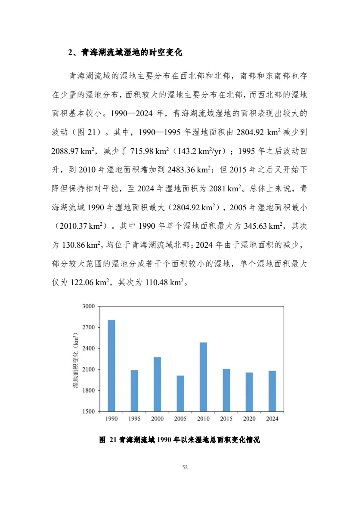
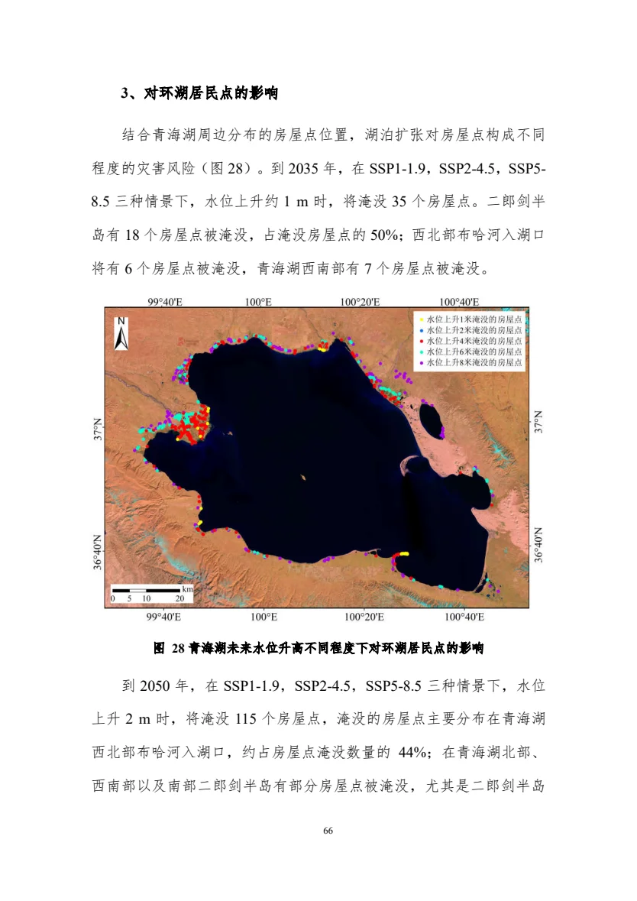

PAPER → METHOD → PROJECT / 青海湖专题
从鸟类轨迹，
走到未来栖息地。
详细拆解一篇把斑头雁GPS轨迹、Landsat遥感和气温序列连接起来的机器学习论文，并把其中真正可迁移的方法，接入你的“湿地变化—湖泊扩张—水鸟响应—保护决策”新构想。
Su, Piao, Luo & Yan · Animals 2018, 8(5), 66
研究链路 / 04 STEPS
EVIDENCE MAP
01GPS轨迹停留 ≠ 飞越
02DBIC聚类生成停歇地标签
03多模态特征影像 + 温度
04适宜性地图保护决策入口
卫星追踪个体
GPS轨迹点
迁徙停歇地
分类准确率
00 / 一句话看懂
论文真正的贡献不是“用了CNN”，而是把动物行为数据变成了遥感模型的监督标签。
普通遥感分类先有人定义“水体、草地、建筑”；这篇论文则先从鸟类轨迹识别停歇地，再让模型学习“鸟会选择怎样的环境”。
输出边界：它预测的是影像块层面的潜在适宜性，不等同于繁殖成功率、种群数量或完整生态质量。
01 / 他们怎么做
四步完成从轨迹到地图的转换。
点击步骤，查看数据、处理方式、直接输出及关键判断。
STEP 01
识别真正的停留行为，而不是把所有GPS点都当成栖息地。
输入
时间戳、经纬度、个体编号组成的斑头雁轨迹。
方法
DBIC同时计算同一轨迹的时间密度，以及不同个体在邻域内的全局密度。
输出
从60,161个轨迹点中识别约290个停歇区域。
为什么重要
飞越某地不能证明该地适宜；停留行为更接近觅食、休息、换羽或繁殖等实际利用。
DATA / 三类输入
空间、时间与行为被放在同一张样本表里。
鸟类GPS轨迹
确定哪些位置被鸟类实际使用，并通过聚类识别停歇地。
- 29只斑头雁
- 采样间隔数小时至数天
- 存在丢点与频率不一致
Landsat 5 TM
使用1、2、3、4、5、7波段描述地表覆盖与空间纹理。
- 云量不高于20%
- 16 × 16像元切片
- 单块约480 × 480米
15天气温序列
取影像日期前后各7天，用最近气象站补充短期环境条件。
- 11个气象站
- 逐日平均气温
- 1D卷积提取时间特征
02 / 结果怎么看
最优模型并非每个指标都第一。
切换指标比较六种基线。柱长为论文报告的均值。
指标来自论文表4；误差线未在此简化图中展开。
03 / 我能用到什么
不要替换你已有的模型，
要在它后面接上生态响应。
你现有项目已经回答“湖和湿地怎么变”；下一步是回答“鸟类栖息地因此怎么变”。
已有成果 A8期湿地分类1990—2024
+
已有成果 B未来湖面预测SSP情景
→
新增模型水鸟适宜性行为 × 遥感 × 水文
→
决策输出保护优先级核心区 / 风险区
可直接继承
已有湿地范围、湖岸线、水位、面积、气候情景和未来淹没边界，可直接变成栖息地模型的环境变量。
湿地类型距水距离斑块连通性未来岸线
需要新增
鸟类GPS、同步监测点或样线调查数据，用来构建存在标签，并区分觅食、繁殖、换羽与迁徙停歇。
个体ID时间戳行为阶段调查努力
最终回答
湖面扩大究竟增加了开阔水面，还是淹没了更稀缺的浅水、泥滩、河口和湖滨草甸。
稳定核心区损失区增益区生态廊道


04 / 怎么用
先按你拥有的鸟类数据，选择实施路线。
数据条件决定方法，不要为了“深度学习”跳过标签质量和独立验证。
推荐标签DBIC停歇地 + 行为阶段
推荐模型RF基线 → 多分支CNN
验证方式按个体、年份和空间分块
先复现论文的“停歇地识别—影像块分类”，再加入水位、湿地格局和人类干扰变量。测试集必须保留完整个体或完整年份，避免随机切分带来的数据泄漏。
标签工程
轨迹清洗、停歇地识别、活动阶段划分；同步记录个体、时间、地点和调查努力。
输出：可追溯样本表环境数据立方体
按样本时间匹配遥感、水位、气象、地形、湿地格局和人类干扰变量。
输出：时空特征栈模型与验证
先做RF/XGBoost/MaxEnt基线，再评估多模态CNN是否带来稳定增益。
输出：独立测试指标未来情景耦合
更新未来岸线、水深、湿地类型和气候变量，逐情景重新计算适宜性。
输出：增益—损失地图保护决策
叠加自然保护地、道路和居民点，识别稳定核心区、冲突区和恢复优先区。
输出：分区行动清单05 / 不足与创新
每个创新，都应当对应一个可信度缺口。
点击展开：先看论文限制，再看你的改进动作。
01随机样本划分造成时空泄漏验证创新
论文不足：相邻影像块、同一个体或同一时期的数据可能同时进入训练集和测试集，指标可能偏高。
你的改进：采用按个体留一、按年份留一、空间分块三套验证；最后保留一批独立现场调查点作为外部测试。
02“停留过”不等于完整的栖息地质量标签创新
论文不足：停歇点不能直接代表繁殖成功、食物充足或长期种群维持。
你的改进：把标签细分为觅食、繁殖、换羽、夜栖和迁徙停歇；若暂时无法细分，应明确输出为“利用概率”而非“生态质量”。
03单景Landsat与单一窗口尺度过粗尺度创新
论文不足：约480米影像块容易混合浅水、泥滩、草甸、道路和居民点，也忽略物候变化。
你的改进：采用小、中、大三种窗口，同时加入季节性NDVI/NDWI、水位和冰期序列，分别描述微生境与景观连通性。
04缺少未来环境变化与不确定性情景创新
论文不足：主要识别历史或当前适宜区，没有回答未来岸线变化后栖息地是否保留。
你的改进：把现有SSP水量—水位—面积预测接入栖息地模型，并同时输出多模型分歧、置信区间和稳定核心区。
FINAL / 项目应该交付什么
四张地图，比一个“高准确率”更接近管理需求。
最终叙事从模型性能落到空间行动：哪里稳定、哪里正在丧失、哪里可能新增、哪里需要优先保护。
- MAP 01当前栖息地适宜性连续概率 + 不确定性
- MAP 02历史变化归因湿地 / 水位 / 人类干扰
- MAP 03未来增益—损失2035 / 2050 / 2070 / 2100
- MAP 04保护优先级核心区 / 廊道 / 恢复区
SOURCES / 证据与边界
Modeling Habitat Suitability of Migratory Birds from Remote Sensing Images Using Convolutional Neural Networks
Su, J.-H.; Piao, Y.-C.; Luo, Z.; Yan, B.-P. Animals 2018, 8, 66.
DOI 10.3390/ani8050066 ↗青海湖高原湖泊湿地演变趋势及应对措施
本站的项目迁移建议建立在现有湿地分类、未来水量和湖岸暴露分析基础上。
打开项目报告 ↗模型输出不是生态事实本身
适宜性、利用概率、种群数量和繁殖成功率是不同概念；网站明确区分论文结果、项目已有结果和新增研究建议。